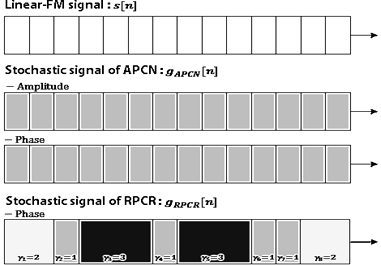

연구실적 · 국내전문학술지
도플러 특성 개선을 위한 랜덤 위상 및 부호율 천이 기반 저피탐 레이다 파형
The Low Probability of Intercept RADAR Waveform Based on Random Phase and Code Rate Transition for Doppler Tolerance Improvement

초록
전자전(Electronic Warfare) 상황에서 레이다는 재머에 의해 전파교란공격(ECM: Electronic Counter Measures)을 받게 된다. Linear-FM 신호는 도플러 특성이 우수하고, 신호의 구현이 용이하여 레이다에서 주로 사용되어 왔지만, 반복된 패턴에 의해 피탐 확률이 높고, 신호 특성변수 추정이 가능하여 기만재밍에 취약하다. 최근 제안된 APCN(Advanced Pulse Compression Noise) 신호는 랜덤 진폭과 랜덤 위상코드로 이루어진 신호로서, 저피탐 성능이 우수한 신호이다. 하지만, APCN 신호를 비롯한 일반적인 위상코드 신호는 도플러 특성이 좋지 않으므로, 주파수 천이에 의해 신호수신 성능이 저하될 수 있다. 따라서 본 논문에서는 도플러 특성을 개선하기 위한 방안으로 랜덤 위상천이 및 부호율 천이(RPCR: Random Phase and Code Rate transition) 레이다 신호 파형을 제안하고, 도플러 성능과 저피탐 성능을 분석하였다. Ambiguity 함수를 이용하여 부호율 천이에 의한 도플러 특성 개선을 제시하며, WHT(Wigner-Hough Transform)을 이용한 신호 특성 변수 추정 실험을 통해 RPCR 신호의 저피탐 성능을 분석하고, 전파교란대응책(ECCM: Electronic Counter Counter Measures)으로의 가능성을 확인한다.
사이트 원문 표기
이기웅, 이우경, “도플러 특성 개선을 위한 랜덤 위상 및 부호율 천이 기반 저피탐 레이다 파형”, 한국전자파학회지, 제26권 11호, 2015년 11월
BibTeX
@article{Lee_2015,
title={The Low Probability of Intercept RADAR Waveform Based on Random Phase and Code Rate Transition for Doppler Tolerance Improvement},
volume={26},
ISSN={1226-3133},
url={http://dx.doi.org/10.5515/KJKIEES.2015.26.11.999},
DOI={10.5515/kjkiees.2015.26.11.999},
number={11},
journal={The Journal of Korean Institute of Electromagnetic Engineering and Science},
publisher={Korean Institute of Electromagnetic Engineering and Science},
author={Lee, Ki-Woong and Lee, Woo-Kyung},
year={2015},
month=Nov,
pages={999–1011}
}